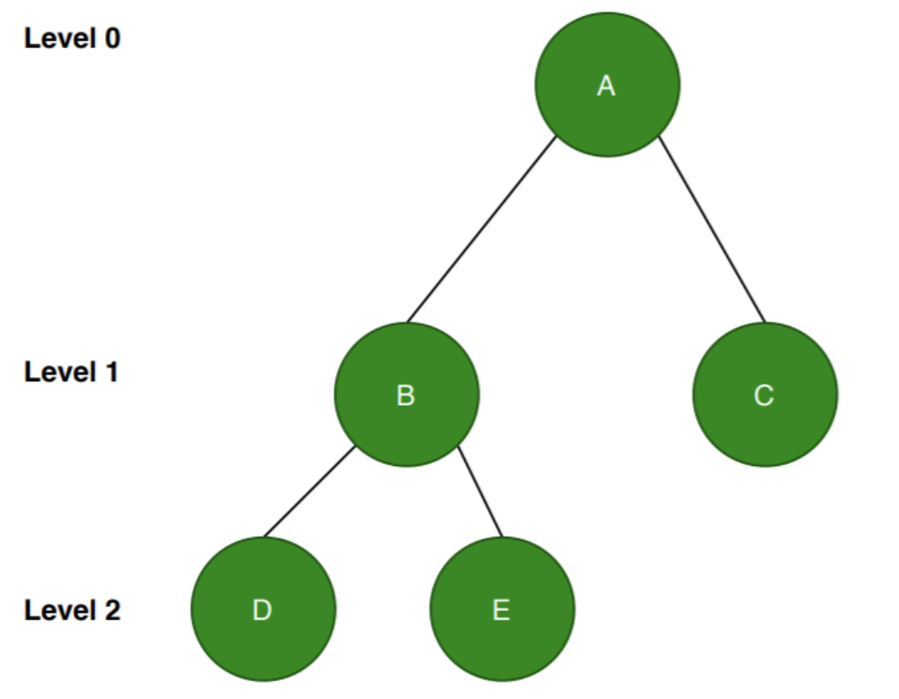

Chapter 6: Graphs and Trees
Section 6.2 Trees and Their Representations
Tree Terminology
tree data structure is a hierarchical structure that is used to represent and organize data in a way that is easy to navigate and search. It is a collection of nodes that are connected by edges and has a hierarchical relationship between the nodes.This data structure is a specialized method to organize and store data in the computer to be used more effectively. We can say that tree data structure has roots, branches, and leaves connected with one another.
A tree is a special type of graph that:
- ♣ Is connected (every node is reachable).
- ♣ Has no cycles (no loops or repeated paths).
- ♣ Has a root (in rooted trees) that starts the structure.
Root
A special type of graph called a tree turns out to be a very useful representation of data. A tree is an acyclic, connected graph with one node designated as the root of the tree.Children and Parent
A tree can also be defined recursively. A single node is a tree (with that node as its root). If \(T_1, T_2, ... , T_t \) are disjoint trees with roots \(r_1, r_2, ... , r_t\), the graph formed by attaching a new node r by a single arc to each of \(r_1, r_2, ... , r_t\), is a tree with root r. The nodes \(r_1, r_2 ... , r_t\) are children of r, and r is a parent of \(r_1, r_2, ... , r_t\). Figure 6.32 shows the final step in the recursive construction of the tree in Figure 6.31b. It is often helpful to process a tree structure by working with it recursively, treating the subtrees as smaller tree objects.Depth of a node
Because a tree is a connected graph, there is a path from the root to any other node in the tree; because the tree is acyclic, that path is unique. The depth of a node in a tree is the length of the path from the root to the node; the root itself has depth 0.Depth (height) of the tree
The depth (height) of the tree is the maximum depth of any node in the tree; in other words, it is the length of the longest path from the root to any node.Leaf and internal nodes
A node with no children is called a leaf of the tree; all non-leaves are internal nodes.Forest
A forest is an acyclic graph (not necessarily connected); thus a forest is a disjoint collection of trees. Figures 6.31a and 6.31b together form a forest.Binary trees
Binary trees , where each node has at most two children, are of particular interest. In a binary tree, each child of a node is designated as either the left child or the right child. Figure 6.33 shows a binary tree of height 4Full binary tree
A full binary tree occurs when all internal nodes have two children and all leaves are at the same depth. Figure 6.34 shows a full binary tree of height 3.Complete binary tree
A complete binary tree is a binary tree in which all the levels are completely filled except the lowest level, which is filled from the left. A complete binary tree is an almost full binary tree; the bottom level of the tree is filling from left to right but may not have its full complement of leaves. Figure 6.35 shows a complete binary tree of height 3. (Note that while a tree is a graph, a complete tree is not a complete graph!)Complete binary Tree Example
The following is a complete binary tree. Since all the levels except the last level should be completely filled. The nodes are filled from the left.
The following is not a complete binary tree. The nodes need to be filled from the left.
Practice
Applications of Trees
By using trees, a collection of records can be efficiently searched to locate a particular record or to determine that a record is not in the collection. Examples of such a search would be checking for a volume in a library, for a patient’s medical record in a hospital, or an individual’s credit record at the bank. We will also look at binary tree search in Section 6.3.Example 1: University Hierarchy
The organization chart indicating who reports to whom in a large company or other enterprise is usually a tree. Figure 6.37 is an example of the University organization:
Example 2: File System Structure (folders and subfolders)
The file system on a computer:
Example 3: Algebraic Expressions as Trees
In computer science and mathematics, algebraic expressions can be represented using binary trees, known as Expression Trees. These trees help in evaluating expressions, Symbolic Differentiation (Calculus), compiling code, and more.
- ♣ The operators (+, -, *) become internal nodes.
- ♣ The operands (2, x, y, 3) become leaf nodes.
Example 4: Huffman Tree
Data Compression: Huffman coding is a popular technique for data compression that involves constructing a binary tree where the leaves represent characters and their frequency of occurrence. The resulting tree is used to encode the data in a way that minimizes the amount of storage required.
Reference
saylor academygeeksforgeeks